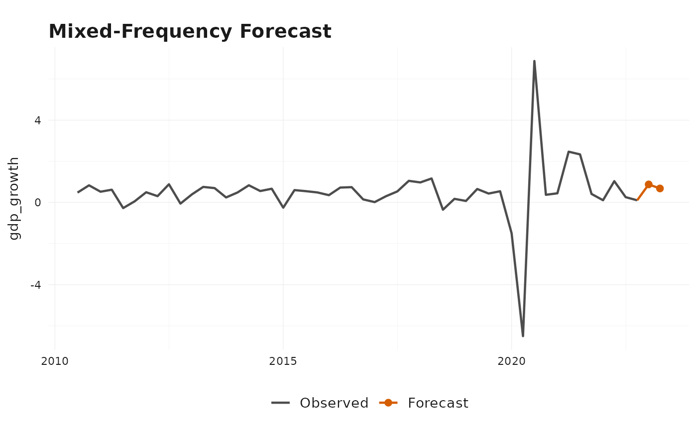
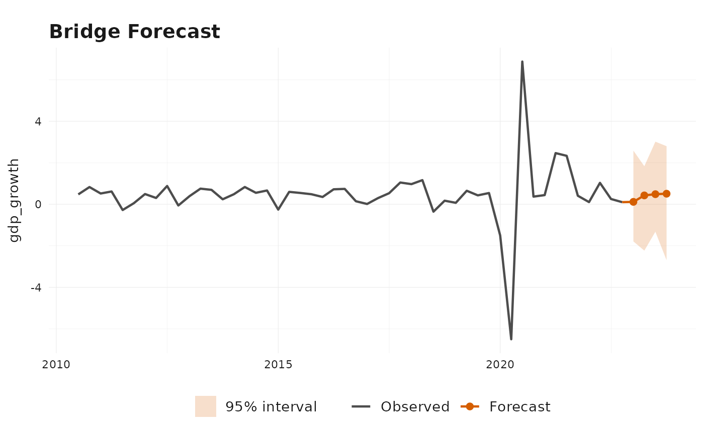

Overview
bridgr is a mixed-frequency forecasting package for
bridge models, MIDAS-style regressions, and intermediate specifications
that estimate within-period weights from the data.
The core workflow is always the same:
- Provide one lower-frequency target series and one or more higher-frequency indicators.
- Decide how missing indicator observations should be handled with
indic_predict. - Decide how indicators should be aligned to the target frequency with
indic_aggregators. - Fit the target equation with
bridge(), inspect it withsummary(), and produce target-period forecasts withforecast().
This vignette walks through that workflow with the package’s built-in Swiss GDP and barometer data.
Example Data
gdp_growth <- suppressMessages(tsbox::ts_na_omit(tsbox::ts_pc(gdp)))
head(gdp_growth)
#> # A tibble: 6 × 2
#> time values
#> <date> <dbl>
#> 1 2004-04-01 0.839
#> 2 2004-07-01 -0.104
#> 3 2004-10-01 0.242
#> 4 2005-01-01 0.860
#> 5 2005-04-01 1.06
#> 6 2005-07-01 1.15
head(baro)
#> # A tibble: 6 × 2
#> time values
#> <date> <dbl>
#> 1 2004-01-01 109.
#> 2 2004-02-01 108.
#> 3 2004-03-01 109.
#> 4 2004-04-01 110.
#> 5 2004-05-01 109.
#> 6 2004-06-01 105.gdp_growth is quarterly, while baro is
monthly. bridge() recognizes the frequency mismatch
automatically and aligns the indicator to the target frequency before
fitting the target equation.
A Basic Bridge Model
bridge_model <- bridge(
target = gdp_growth,
indic = baro,
indic_predict = "auto.arima",
indic_aggregators = "mean",
indic_lags = 1,
target_lags = 1,
h = 2
)
forecast(bridge_model)
#> Bridge forecast
#> -----------------------------------
#> Target series: gdp_growth
#> Forecast horizon: 2
#> Target model: fc_model
#> Uncertainty: point forecast only
#> -----------------------------------
#> # A tibble: 2 × 7
#> time mean se lower_80 upper_80 lower_95 upper_95
#> <date> <dbl> <dbl> <dbl> <dbl> <dbl> <dbl>
#> 1 2023-01-01 0.972 NA NA NA NA NA
#> 2 2023-04-01 0.698 NA NA NA NA NAThe default mean aggregator is the classic bridge-model setup: each monthly block is completed first, then averaged to the quarterly frequency before the target equation is estimated.
The fitted object stores the aligned data that went into estimation and the future target-period regressor path used for forecasting.
tail(bridge_model$estimation_set)
#> # A tibble: 6 × 4
#> time gdp_growth baro baro_lag1
#> <date> <dbl> <dbl> <dbl>
#> 1 2021-07-01 2.34 112. 125.
#> 2 2021-10-01 0.411 104. 112.
#> 3 2022-01-01 0.105 97.4 104.
#> 4 2022-04-01 1.03 94.3 97.4
#> 5 2022-07-01 0.255 90.0 94.3
#> 6 2022-10-01 0.102 90.7 90.0
bridge_model$forecast_set
#> # A tibble: 2 × 3
#> time baro baro_lag1
#> <date> <dbl> <dbl>
#> 1 2023-01-01 97.4 90.7
#> 2 2023-04-01 99.8 97.4Standardized Output
summary() and forecast() use a stable
package-specific layout. The base output is the same across bridge,
MIDAS-style, and direct-alignment specifications. Additional details,
such as optimization summaries or bootstrap settings, are appended only
when they are relevant.
summary(bridge_model)
#> Bridge model summary
#> -----------------------------------
#> Target series: gdp_growth
#> Target frequency: quarter (step 1)
#> Forecast horizon: 2
#> Target model: fc_model
#> Estimation rows: 74
#> Regressors: baro, baro_lag1
#> -----------------------------------
#> Target equation coefficients:
#> # A tibble: 4 × 3
#> term estimate bootstrap_se
#> <chr> <dbl> <dbl>
#> 1 ar1 0.243 NA
#> 2 intercept -6.49 NA
#> 3 baro 0.161 NA
#> 4 baro_lag1 -0.0917 NA
#> -----------------------------------
#> Indicator summary:
#> # A tibble: 1 × 5
#> indicator frequency predict aggregation indicator_model
#> <chr> <chr> <chr> <chr> <chr>
#> 1 baro month (step 1) auto.arima mean fc_model
#> -----------------------------------
#> Uncertainty:
#> Method: none
#> -----------------------------------Forecast Visualization
The package also provides a built-in plotting method for fitted
bridge models. With type = "forecast", it shows the
observed target history together with the forecast path generated by the
model.
plot(bridge_model, type = "forecast")
Direct Alignment
If you set indic_predict = "direct", bridgr
switches from indicator forecasting to direct MIDAS-style alignment. In
that case, the latest complete high-frequency blocks are assigned
backward to target periods instead of being forecast forward first.
direct_model <- bridge(
target = gdp_growth,
indic = baro,
indic_predict = "direct",
indic_aggregators = "unrestricted",
h = 1
)
forecast(direct_model)
#> Bridge forecast
#> -----------------------------------
#> Target series: gdp_growth
#> Forecast horizon: 1
#> Target model: lm
#> Indicator handling: direct alignment
#> Uncertainty: point forecast only
#> -----------------------------------
#> # A tibble: 1 × 7
#> time mean se lower_80 upper_80 lower_95 upper_95
#> <date> <dbl> <dbl> <dbl> <dbl> <dbl> <dbl>
#> 1 2023-01-01 0.522 NA NA NA NA NAThis is particularly useful at the ragged edge when you want to work only with observed high-frequency information and avoid a separate indicator forecasting step.
Optional Bootstrap Uncertainty
By default, bridgr returns point forecasts only. If you
want uncertainty output, request it at estimation time with
se = TRUE and a bootstrap configuration.
boot_model <- bridge(
target = gdp_growth,
indic = baro,
indic_predict = "auto.arima",
indic_aggregators = "mean",
target_lags = 1,
h = 4,
se = TRUE,
bootstrap = list(type = "block", N = 40, block_length = NULL)
)
forecast(boot_model)
#> Bridge forecast
#> -----------------------------------
#> Target series: gdp_growth
#> Forecast horizon: 4
#> Target model: fc_model
#> Uncertainty: predictive intervals from conditional block bootstrap
#> Bootstrap draws: 40 / 40
#> Block length: 5
#> -----------------------------------
#> # A tibble: 4 × 7
#> time mean se lower_80 upper_80 lower_95 upper_95
#> <date> <dbl> <dbl> <dbl> <dbl> <dbl> <dbl>
#> 1 2023-01-01 0.116 0.938 -1.19 1.10 -1.79 2.59
#> 2 2023-04-01 0.428 0.920 -0.920 1.50 -2.23 1.83
#> 3 2023-07-01 0.487 0.994 -0.631 2.21 -1.32 3.02
#> 4 2023-10-01 0.509 1.10 -0.504 2.04 -2.70 2.80
summary(boot_model)
#> Bridge model summary
#> -----------------------------------
#> Target series: gdp_growth
#> Target frequency: quarter (step 1)
#> Forecast horizon: 4
#> Target model: fc_model
#> Estimation rows: 75
#> Regressors: baro
#> -----------------------------------
#> Target equation coefficients:
#> # A tibble: 3 × 3
#> term estimate bootstrap_se
#> <chr> <dbl> <dbl>
#> 1 ar1 -0.135 0.203
#> 2 intercept -9.06 3.63
#> 3 baro 0.0950 0.0359
#> -----------------------------------
#> Indicator summary:
#> # A tibble: 1 × 5
#> indicator frequency predict aggregation indicator_model
#> <chr> <chr> <chr> <chr> <chr>
#> 1 baro month (step 1) auto.arima mean fc_model
#> -----------------------------------
#> Uncertainty:
#> Method: conditional block bootstrap with predictive forecast draws
#> Bootstrap draws: 40 / 40
#> Block length: 5
#> -----------------------------------
plot(boot_model, type = "forecast")
The current uncertainty implementation uses a conditional block
bootstrap on the final target-frequency estimation sample. It does not
re-estimate indicator forecast models or parametric aggregation weights
inside each bootstrap draw. The stored forecast draws do add simulated
future target shocks, so forecast() and
plot(..., type = "forecast") return predictive intervals on
top of the historical target path and forecast mean.
Where to Go Next
The vignette
vignette("mixed-frequency-modeling", package = "bridgr")
compares the main aggregation strategies and shows how
bridgr moves from classic bridge models to unrestricted and
parametric MIDAS-style specifications.
The vignette
vignette("ragged-edge-nowcasting", package = "bridgr")
focuses on indic_predict and the different ways to handle
incomplete high-frequency data at the forecast origin.
The vignette
vignette("uncertainty-and-scenarios", package = "bridgr")
shows how to work with conditional block-bootstrap uncertainty and
scenario forecasts based on custom future regressor paths.